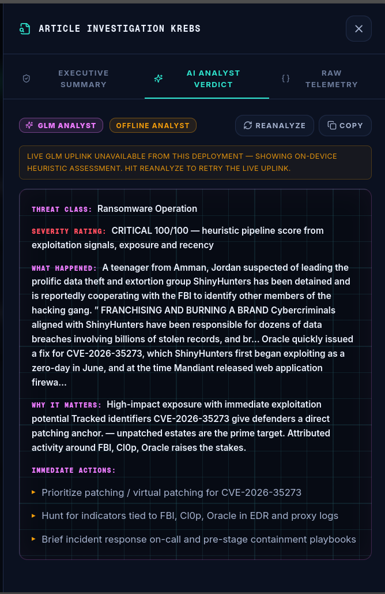

Open any signal and the AI analyst has already read it. When a GLM uplink is configured it writes a structured verdict per story; with no keys configured, a deterministic on-device analyst takes over — marked DEGRADED, and it never errors out.
CRITICAL 100/100 — Chinese actors exploiting critical infrastructure with automated and hands-on techniques
Chinese government-linked actors using automated tools and hands-on exploitation target organizations worldwide, including US critical infrastructure.
